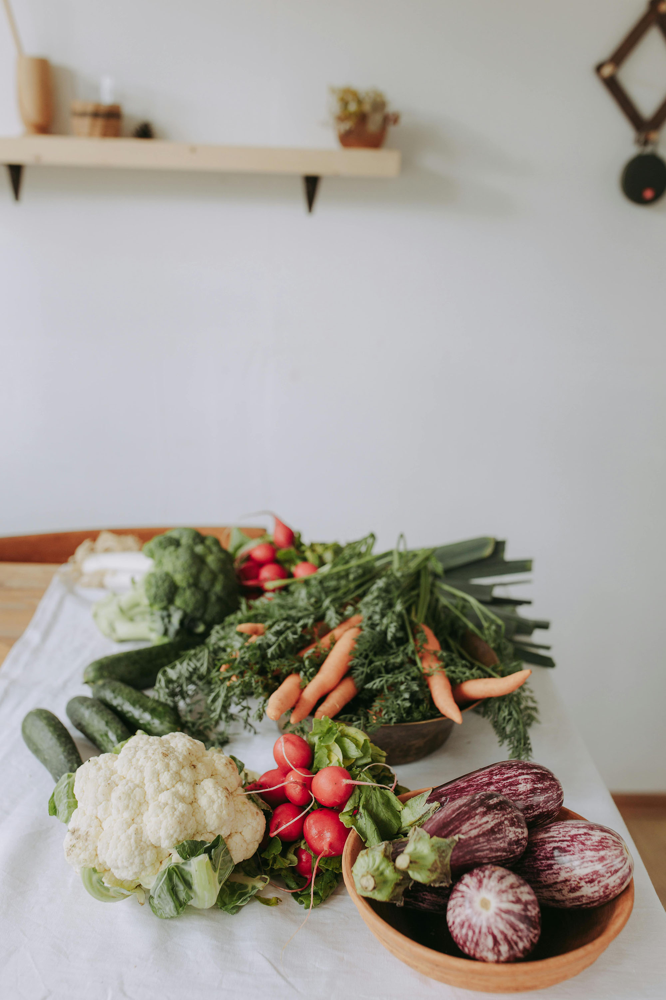
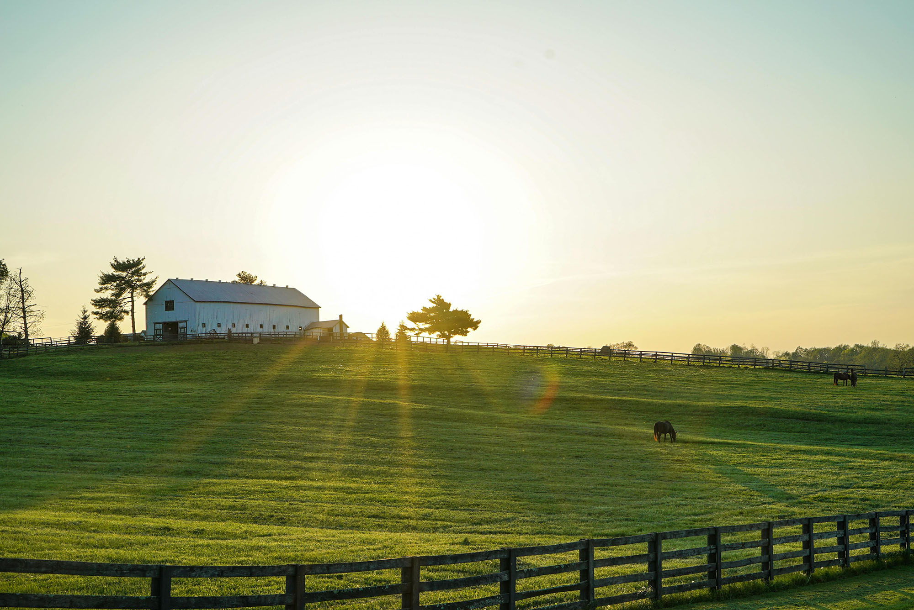

Farm to Table CSA is a family-run farm in Elberta, Alabama that grows from USDA organic, non-GMO seeds and heirloom plants. We run on a Community Supported Agriculture (CSA) model in which members of our community can sign up to receive weekly shares of our harvest during the fall and spring seasons. By signing up for a CSA box from Farm to Table, you are supporting local agriculture directly without the need for a middleman.
